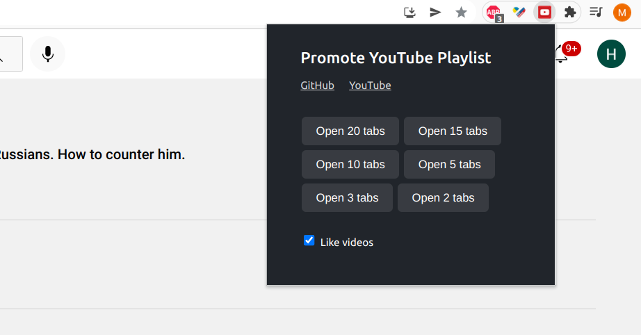

Основано на видео @detoxbrainwash.
В ситуации когда независимые СМИ закрыты и социальные сети заблокированы в России, YouTube остается одним из немногих платформ где все еще можно делиться информацией.
В этом видео @detoxbrainwash показывает как кремлеботы накручивают просмотры пропагандистским материалам в YouTube. В результате в рекомендациях YouTube преобладают видео в поддержку войны в Украине и других преступлений Путина.
Мы сделали расширение для браузера которое помогает продвигать видео от независимых каналов. Расширение открывает ваш плейлист в нескольких вкладках, прокручивает и лайкает видео из списка. Поддерживаются браузеры Chrome, Edge, Opera.
Расширение доступно в Chrome Store -
"Promote YouTube videos".
Так же его можно установить локально:
- Download extension folder from GitHub - use this link.
- Unzip the archive in any location on your machine.
- Open Extentions manager in Chrome browser - copy this link to your browser chrome://extensions/
- Enable developer mode in the top right corner - see the screenshot.
- Click "Load unpacked" button in the top left corner to upload extension, select the extension folder.
- Extension is ready to use. To bookmark the extension, click "Extensions" button in the top right corner in the browser, then "Pin" icon next to extension name.
-
It is recommended to use YouTube AdBlock extension to skip ads.

- Download extension folder from GitHub - use this link.
- Unzip the archive in any location on your machine.
- Open Extentions manager in Edge browser - copy this link to your browser edge://extensions/
- Enable developer mode in the top right corner - see the screenshot.
- Click "Load unpacked" button in the top left corner to upload extension, select the extension folder.
- Extension is ready to use. To bookmark the extension, click "Extensions" button in the top right corner in the browser, then "Pin" icon next to extension name.
-
It is recommended to use YouTube AdBlock extension to skip ads.

Доступна также упрощенная версия расширения "YouTube - Support Independent Media". Список YouTube каналов и плейлист включены в этой версии - запускать видео можно в один клик кнопки "Open Tabs".
Откройте плейлист который собираетесь продвигать. Рекомендуемый плейлист: Independent Russian Media.
Нажмите кнопку расширения в браузере, выберите количество вкладок:

Мы советуем следовать следующим принципам при выборе видео для плейлиста:
- Продвигать один плейлист командой эффективнее чем каждому участнику создавать отдельный плейлист. Это увеличивает шансы отдельных видео попасть в рекоммендации.
- Выбирайте видео среди популярных каналов - DW, Майкл Наки, Радио Свобода, Екатерина Шульман, Михаил Ходорковский, Юлия Латынина, каналы Навального, Илья Яшин, Владимир Милов. Это увеличивает шансы попасть в рекоммендации - наши ресурсы ограничены.
- Выбирайте видео с нейтральным названием. Название не должно отталкивать зрителей со смешанными взглядами.
- Выбирайте видео достаточно простые для зрителей незнакомых с ситуацией в стране и в мире.
- Выбирайте видео хорошего качества.
- Избегайте видео жесткого содержания.
- Вместо загрузки новых видео, пробуйте попросить известного автора сделать видео на нужную тему.
- Для авторов контента - старайтесь добавлять английские субтитры. Это упростит распространение видео на международную аудиторию.
Discord (ru) https://discord.gg/s7M4QnDtys
Twitter @Hattifnattar1
We welcome developers who are willing to support the project